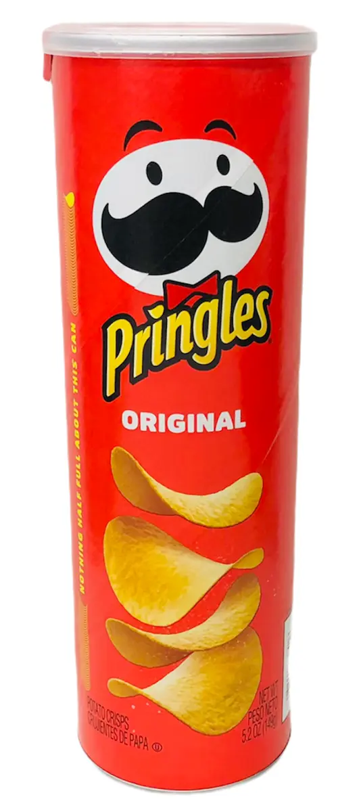

미국의 켈라노바에서 생산하는 감자칩의 상표명이다. 다른 감자칩들이 생감자를 재료로 만드는 것에 비해 프링글스는 감자플레이크 즉, 갈아서 말린 감자로 만든다. 감자를 갈아서 건조시켜 전분 등의 재료를 섞어 반죽을 만들고 이 반죽을 일정한 모양의 틀에서 가열해서 통에 담을 수 있게 성형시킨 것이다. 말린 감자 가루로 만들기 때문에 재질이나 표피부터 다르고 기름에 튀겨서 부드러운 보통 감자칩보다 더 바삭하다. 그리고 일정한 모양의 틀에서 가공하기에 다른 감자칩들에 비해 모양과 크기도 일정하다.
칼로리는 통 당 603kcal이다. P&G 생산 미국산에서 이슬람 국가인 말레이시아 OEM으로 수입처가 바뀌면서 동남아 프링글스판에 한글 표기사항만 추가 인쇄 후 수입하면서 자연스레 할랄 푸드 인증이 들어갔다가 한국용 포장 마킹이 나오며 할랄은 삭제되었다. 감자 가루+전분 등 재료를 혼합해 만드는 탓에 감자 함유량이 여타 감자칩보다 낮은 편이다.